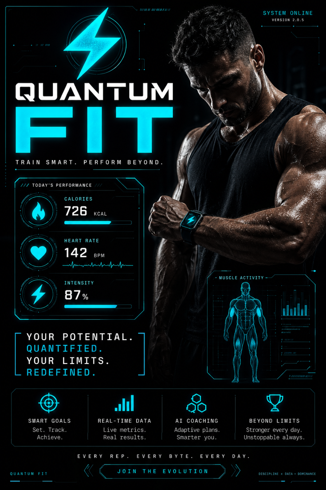
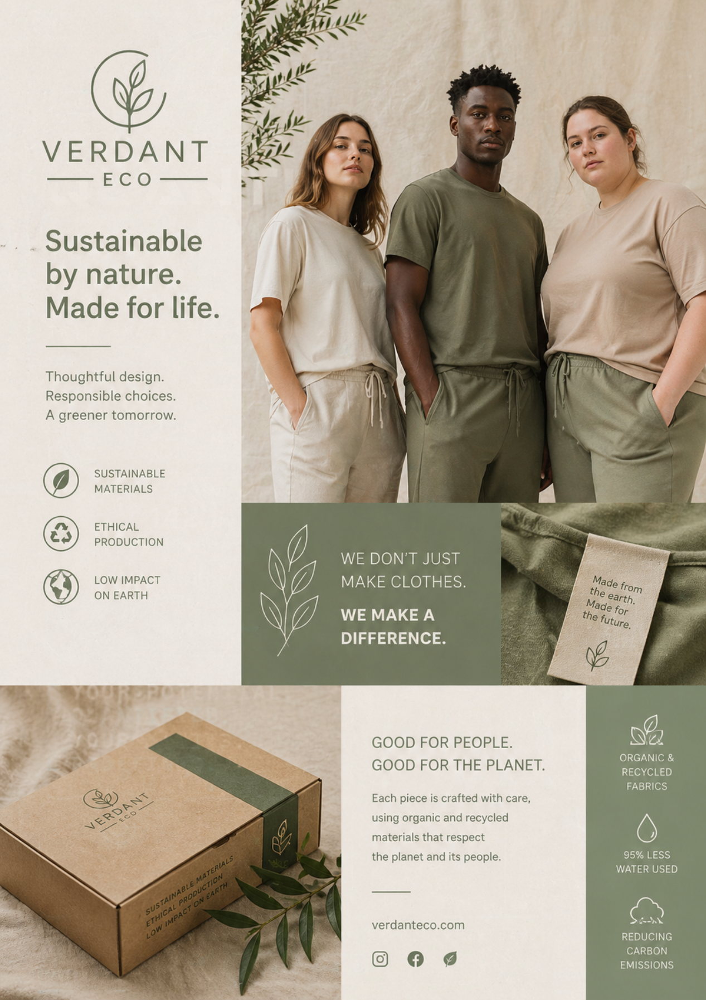
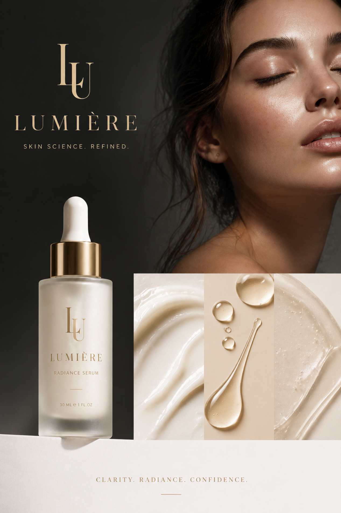
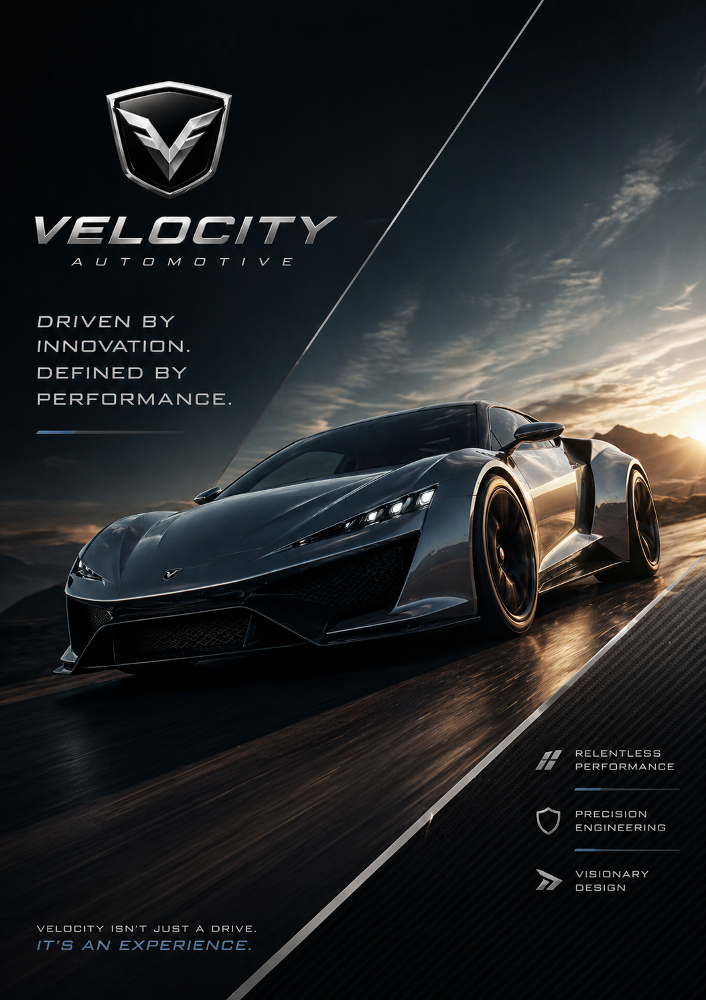
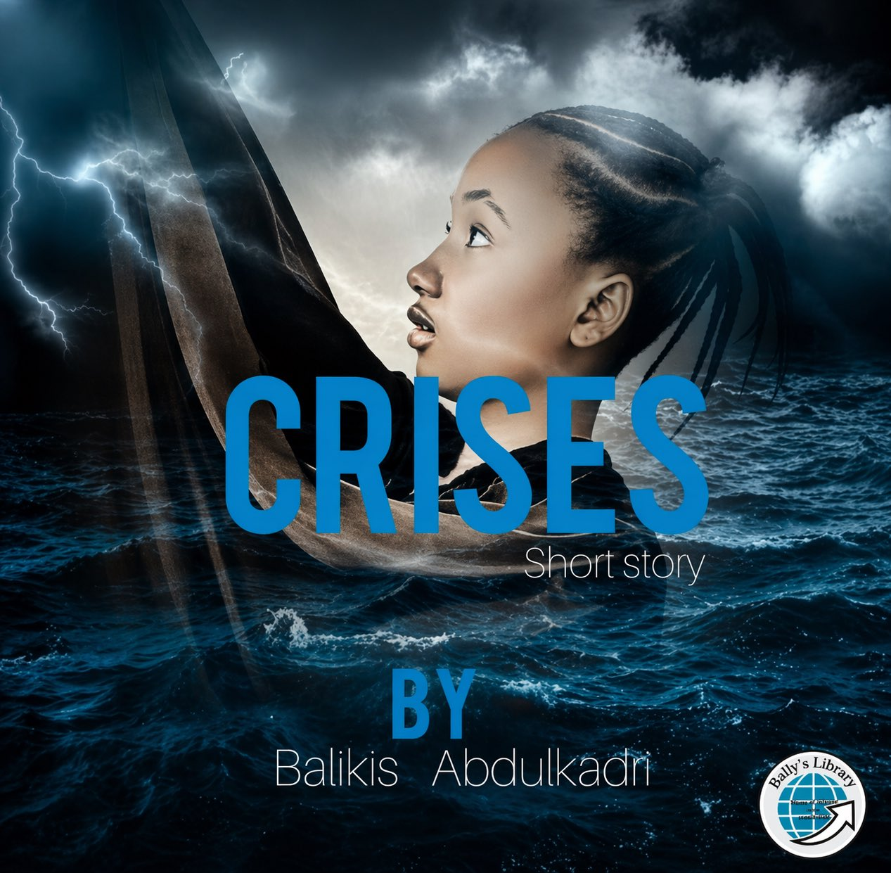
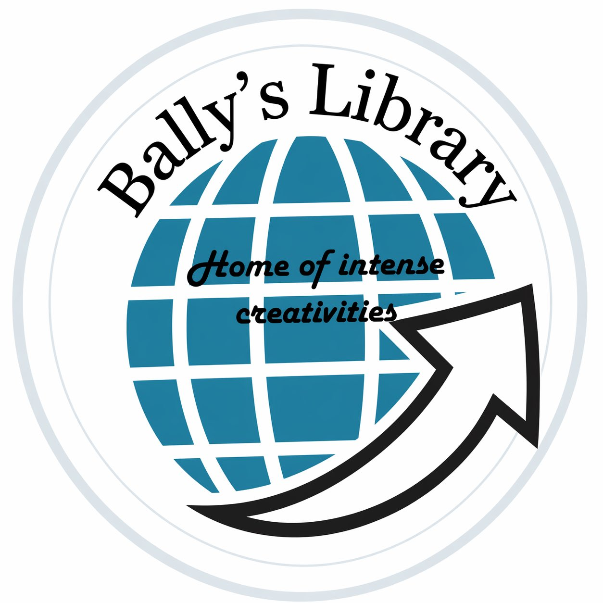
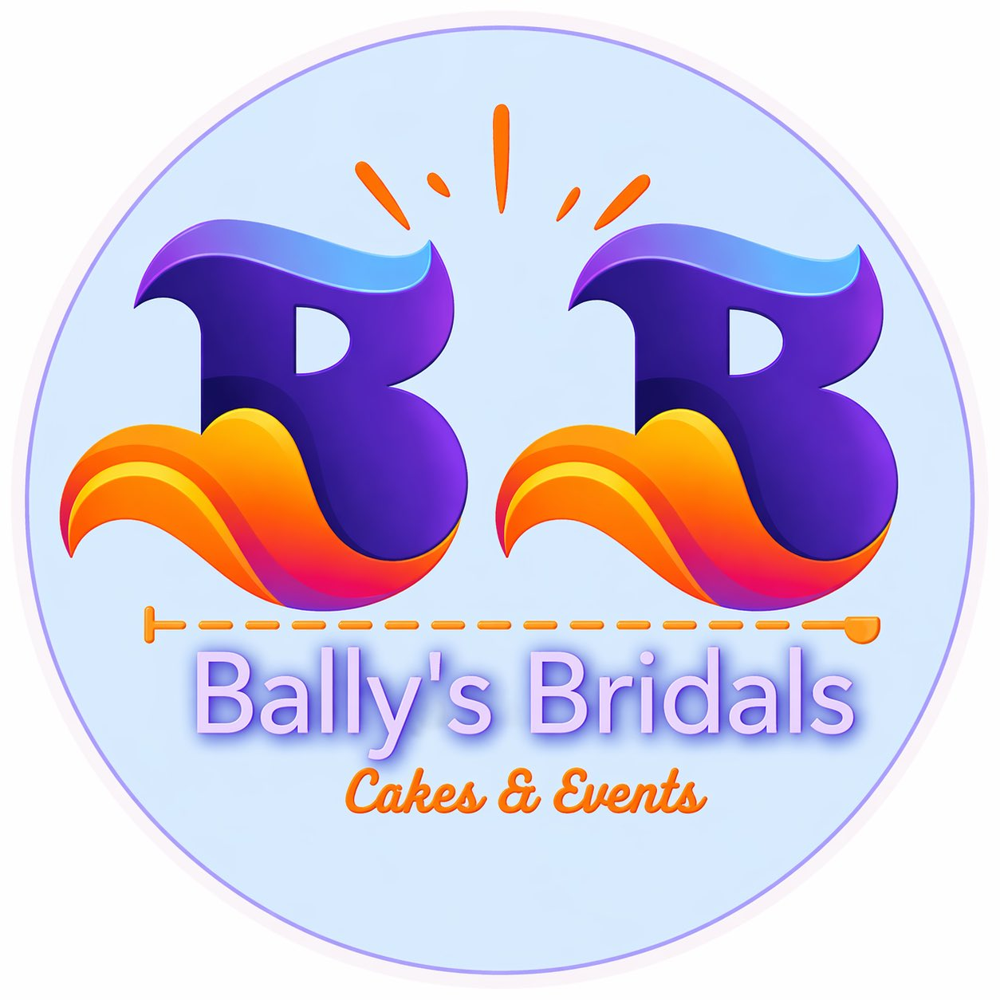

High Tech Gym(AI tool, 2026) Gym haute tech(outil IA, 2026)
Objective:Objectif :
Position brand that uses data-driven, futuristic performance tools.
Positionner la marque qui utilise des outils de performance futuriste basé sur les données.
Style:Style :
Cyberpunk aesthetic with neon cyan and deep black.
Esthétique Cyberpunk avec cyan néon et noir profond.
Key Elements:Éléments clés :
HUD data visualization and Biohacker messaging.The "Today's Performance" HUD (Heads-Up Display) mimics a cockpit, suggesting the user has total control over their biological data.
Visualisation de données HUD et message "Biohacker". L'affichage tête haute (HUD) « Performance du jour » imite un cockpit, suggérant que l'utilisateur a un contrôle total sur ses données biologiques.
The Hero Image: A muscular physique emphasizes "results," while the focus on the smartwatch grounds the sci-fi elements in a tangible product.
VL'image vedette : Un physique musclé met l'accent sur les « résultats », tandis que l'attention portée à la montre connectée ancre les éléments de science-fiction dans un produit tangible.

A Clothing brand showing Sustainability(AI tool, 2026) Une marque de vêtements prônant la durabilité(outil IA, 2026)
Objective:Objectif :
Establish trust and transparency in ethical fashion.
Établir la confiance et la transparence dans la mode éthique.
Style:Style :
Earthy tones (sage, oatmeal) and editorial grid.
Tons terreux (sauge, avoine) et grille éditoriale.
Key Elements:Éléments clés :
Inclusive modeling and CSR (Corporate Social Responsibility) iconography.The trio of models represents a realistic range of body types, aligning with the "Good for People" slogan.Close-ups of fabric textures and recycled packaging emphasize the physical quality of the product.Simple, line-art icons represent "95% less water" and "Ethical Production," making complex CSR data easy to digest.
Modèles inclusifs et iconographie RSE (Responsabilité Sociétale des Entreprises). Le trio de modèles représente une gamme réaliste de morphologies, s'alignant ainsi avec le slogan « Bienveillant pour les gens ».Des gros plans sur les textures des tissus et les emballages recyclés soulignent la qualité physique du produit.Des icônes simples au trait représentent « 95 % d'eau en moins » et une « Production éthique », rendant les données complexes de la RSE faciles à assimiler.

Lumière: Luxury Skincare(AI tool, 2026) Lumière : Soins de Luxe(outil IA, 2026)
Objective:Objectif :
Convey elegance, purity, and clinical efficacy.
Transmettre l'élégance, la pureté et l'efficacité clinique.
Style:Style :
"Quiet Luxury" with monochromatic cream and gold.
"Quiet Luxury" avec crème et or monochromatique.
Key Elements:Éléments clés :
Macro swatch photography and serif typography:A serif font for the logo (Lumière) evokes heritage and sophistication, while the sans-serif subtext suggests modern science.The bottom panel shows the serum’s viscosity and texture. This "swatch" imagery is a standard in high-end beauty to prove product quality.
Photographie macro et typographie serif: Une police à empattement (serif) pour le logo (Lumière) évoque l'héritage et la sophistication, tandis que le sous-texte en sans-serif suggère la science moderne.Le panneau inférieur montre la viscosité et la texture du sérum. Ce type d'imagerie, appelé "swatch", est une norme dans le secteur de la beauté haut de gamme pour prouver la qualité du produit.

Velocity: Automotive(AI tool, 2026) Velocity : Automobile(outil IA, 2026)
Objective:Objectif :
Evoke speed, power, and visionary status.
Évoquer la vitesse, la puissance et un statut visionnaire.
Style:Style :
Dutch angle frames and carbon-fiber textures.
Cadrage en angle néerlandais et textures en fibre de carbone.
Key Elements:Éléments clés :
lighting and innovation messaging; The "Golden Hour" sun hitting the car’s curves highlights the aerodynamics and metallic finish.The shield-style logo is placed prominently at the top, mimicking a hood ornament.
Éclairage aérodynamique et message d'innovation.Le soleil de l'« heure dorée » (Golden Hour) frappant les courbes de la voiture souligne l'aérodynamisme et la finition métallique. Le logo en forme de blason est placé en évidence au sommet, imitant un ornement de capot.

Book Cover: Narrative Design(Canva tool, 2019) Couverture de livre: Design Narratif(outil Canva, 2019)
Objective:Objectif :
Create emotional depth for a survival narrative.
Créer une profondeur émotionnelle pour un récit de survie.
Style:Style :
Surrealist blending of stormy seas and portraiture.
Mélange surréaliste de mers agitées et de portraits.
Key Elements:Éléments clés :
Symbolism of "sinking" and cold blue palette.The person appearing to "rise" or "sink" within the waves serves as a literal and metaphorical representation of a "crisis.The typography is bold and central, ensuring the title is the primary focus, while the sub-text "Short story" manages reader expectations."
Symbolisme de "l'immersion" et palette de bleus froids. Le personnage semblant « s'élever » ou « sombrer » dans les vagues sert de représentation littérale et métaphorique d'une « crise ».La typographie est grasse et centrale, garantissant que le titre soit le point focal principal, tandis que le sous-texte « Nouvelle » (Short story) gère les attentes du lecteur

Bally’s Library: Blog & Books(Canva tool, 2019) Bally’s Library : Blog et Livres(outil Canva, 2019)
Objective:Objectif :
Establish an identity for a digital repository of literature.
Établir une identité pour un répertoire numérique de littérature.
Visual Style:Style Visuel :
Professional and global, using a globe icon to suggest an inclusive reach.
Professionnel et mondial, utilisant une icône de globe pour suggérer une portée inclusive.
Key Elements:Éléments clés :
Globe for universality and an upward arrow for intellectual growth.
Un globe pour l'universalité et une flèche vers le haut pour la croissance intellectuelle.
Strategy:Stratégie :
Positioning the brand as a bridge between traditional libraries and modern blogs.
Positionner la marque comme un pont entre les bibliothèques traditionnelles et les blogs modernes.

Brand logo for Cakes & Events(Canva tool, 2019) Un logo de marque Gâteaux et Événements(outil Canva, 2019)
Objective:Objectif :
Evoke elegance and premium service for life's milestones.
Évoquer l'élégance et un service premium pour les étapes marquantes de la vie.
Visual Style:Style Visuel :
Vibrant and artistic gradients (purple to orange) to suggest passion.
Dégradés vibrants et artistiques (du violet à l'orange) pour suggérer la passion.
Key Elements:Éléments clés :
Stylized "BB" monogram representing fluid artistry in decor and baking.
Monogramme "BB" stylisé représentant l'art fluide de la décoration et de la pâtisserie.
Strategy:Stratégie :
Boutique positioning targeting clients seeking bespoke, high-quality planning.
Positionnement "boutique" ciblant les clients recherchant une planification sur mesure de haute qualité.
Skills Applied
Compétences Appliquées
- Prompt Engineering: Ingénierie de prompt : I applied prompt engineering by carefully structuring descriptive keywords and stylistic constraints to guide the AI in generating high-fidelity brand assets. This ensured each image maintained a specific emotional tone and visual hierarchy. J'ai utilisé l'ingénierie de prompt en structurant précisément des mots-clés descriptifs et des contraintes stylistiques pour guider l'IA dans la création d'identités visuelles de haute fidélité. Cela a permis de garantir que chaque image respecte une tonalité émotionnelle et une hiérarchie visuelle spécifique.
- Canva Ecosystem: Écosystème Canva : Advanced use of Canva for creating scalable vector logos, editorial layouts, and social media brand kits. Utilisation avancée de Canva pour la création de logos vectoriels, de mises en page éditoriales et de kits de marque.
- Visual Storytelling: Storytelling Visuel : Translating complex narratives (like the "Crises" storybook) into compelling visual covers that capture audience attention. Traduction de récits complexes (comme le livre "Crises") en couvertures visuelles percutantes qui captent l'attention.
- Brand Consistency: Cohérence de Marque : Developing unified visual identities (Bally’s Bridals) across different business sectors including events and digital platforms. Développement d'identités visuelles unifiées (Bally’s Bridals) à travers différents secteurs, incluant l'événementiel et les plateformes digitales.
- Typography & Layout: Typographie & Mise en Page : Strategic selection of font pairings and white space management to ensure readability across print and web formats. Sélection stratégique de polices et gestion de l'espace blanc pour garantir la lisibilité sur les formats print et web.